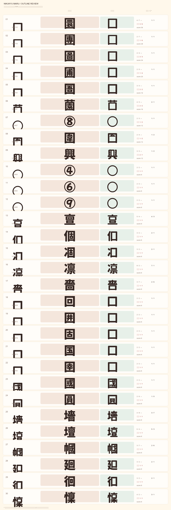

外周 / 穴はTrueType輪郭方向からの推定値。太らせ処理で外周が融合した候補を優先度順に並べ、実TTFをPillowで同じ大きさに描画したPNGを表示する。装飾差を含むため、このランキングは自動FAILではなく目視確認の入口である。

| # | 字 | コード | 元: 外周 / 穴 | 生成: 外周 / 穴 | 減少: 外周 / 穴 | 優先度 |
|---|---|---|---|---|---|---|
| 1 | 圜 | U+571C | 4 / 7 | 1 / 1 | 3 / 6 | 36 |
| 2 | 團 | U+5718 | 2 / 7 | 1 / 1 | 1 / 6 | 28 |
| 3 | 圖 | U+5716 | 4 / 4 | 1 / 1 | 3 / 3 | 24 |
| 4 | 圃 | U+5703 | 2 / 5 | 1 / 1 | 1 / 4 | 20 |
| 5 | 圄 | U+5704 | 3 / 3 | 1 / 1 | 2 / 2 | 16 |
| 6 | 薗 | U+8597 | 4 / 3 | 2 / 1 | 2 / 2 | 16 |
| 7 | ⑧ | U+2467 | 2 / 3 | 1 / 1 | 1 / 2 | 12 |
| 8 | 圍 | U+570D | 2 / 4 | 1 / 2 | 1 / 2 | 12 |
| 9 | 興 | U+8208 | 3 / 3 | 1 / 2 | 2 / 1 | 12 |
| 10 | ④ | U+2463 | 2 / 2 | 1 / 1 | 1 / 1 | 8 |
| 11 | ⑥ | U+2465 | 2 / 2 | 1 / 1 | 1 / 1 | 8 |
| 12 | ⑨ | U+2468 | 2 / 2 | 1 / 1 | 1 / 1 | 8 |
| 13 | 亶 | U+4EB6 | 5 / 4 | 4 / 3 | 1 / 1 | 8 |
| 14 | 個 | U+500B | 3 / 2 | 2 / 1 | 1 / 1 | 8 |
| 15 | 凅 | U+51C5 | 3 / 2 | 2 / 1 | 1 / 1 | 8 |
| 16 | 凛 | U+51DB | 8 / 2 | 7 / 1 | 1 / 1 | 8 |
| 17 | 嗇 | U+55C7 | 3 / 7 | 2 / 6 | 1 / 1 | 8 |
| 18 | 回 | U+56DE | 2 / 2 | 1 / 1 | 1 / 1 | 8 |
| 19 | 囲 | U+56F2 | 2 / 2 | 1 / 1 | 1 / 1 | 8 |
| 20 | 固 | U+56FA | 2 / 2 | 1 / 1 | 1 / 1 | 8 |
| 21 | 国 | U+56FD | 2 / 2 | 1 / 1 | 1 / 1 | 8 |
| 22 | 圉 | U+5709 | 2 / 2 | 1 / 1 | 1 / 1 | 8 |
| 23 | 國 | U+570B | 2 / 2 | 1 / 1 | 1 / 1 | 8 |
| 24 | 圓 | U+5713 | 2 / 6 | 1 / 5 | 1 / 1 | 8 |
| 25 | 墻 | U+58BB | 4 / 8 | 3 / 7 | 1 / 1 | 8 |
| 26 | 壇 | U+58C7 | 6 / 4 | 5 / 3 | 1 / 1 | 8 |
| 27 | 幗 | U+5E57 | 3 / 7 | 2 / 6 | 1 / 1 | 8 |
| 28 | 廻 | U+5EFB | 3 / 2 | 2 / 1 | 1 / 1 | 8 |
| 29 | 徊 | U+5F8A | 3 / 2 | 2 / 1 | 1 / 1 | 8 |
| 30 | 懍 | U+61CD | 4 / 2 | 3 / 1 | 1 / 1 | 8 |
| 31 | 擅 | U+64C5 | 6 / 4 | 5 / 3 | 1 / 1 | 8 |
| 32 | 檀 | U+6A80 | 6 / 4 | 5 / 3 | 1 / 1 | 8 |
| 33 | 檣 | U+6AA3 | 4 / 6 | 3 / 5 | 1 / 1 | 8 |
| 34 | 洄 | U+6D04 | 3 / 2 | 2 / 1 | 1 / 1 | 8 |
| 35 | 涸 | U+6DB8 | 4 / 2 | 3 / 1 | 1 / 1 | 8 |
| 36 | 灣 | U+7063 | 6 / 3 | 5 / 2 | 1 / 1 | 8 |
| 37 | 牆 | U+7246 | 4 / 8 | 3 / 7 | 1 / 1 | 8 |
| 38 | 禀 | U+7980 | 5 / 2 | 4 / 1 | 1 / 1 | 8 |
| 39 | 稟 | U+7A1F | 3 / 2 | 2 / 1 | 1 / 1 | 8 |
| 40 | 穡 | U+7A61 | 3 / 6 | 2 / 5 | 1 / 1 | 8 |
| 41 | 箇 | U+7B87 | 2 / 5 | 1 / 4 | 1 / 1 | 8 |
| 42 | 羶 | U+7FB6 | 6 / 4 | 5 / 3 | 1 / 1 | 8 |
| 43 | 膕 | U+8195 | 3 / 9 | 2 / 8 | 1 / 1 | 8 |
| 44 | 茴 | U+8334 | 3 / 2 | 2 / 1 | 1 / 1 | 8 |
| 45 | 薔 | U+8594 | 4 / 7 | 3 / 6 | 1 / 1 | 8 |
| 46 | 蛔 | U+86D4 | 2 / 4 | 1 / 3 | 1 / 1 | 8 |
| 47 | 迴 | U+8FF4 | 4 / 2 | 3 / 1 | 1 / 1 | 8 |
| 48 | 錮 | U+932E | 3 / 3 | 2 / 2 | 1 / 1 | 8 |
| 49 | 鐵 | U+9435 | 2 / 5 | 1 / 4 | 1 / 1 | 8 |
| 50 | 顫 | U+986B | 6 / 7 | 5 / 6 | 1 / 1 | 8 |
| 51 | % | U+0025 | 3 / 2 | 1 / 2 | 2 / 0 | 8 |
| 52 | 団 | U+56E3 | 3 / 1 | 1 / 1 | 2 / 0 | 8 |
| 53 | ％ | U+FF05 | 3 / 2 | 1 / 2 | 2 / 0 | 8 |
| 54 | 傲 | U+50B2 | 2 / 4 | 2 / 3 | 0 / 1 | 4 |
| 55 | 凜 | U+51DC | 5 / 2 | 5 / 1 | 0 / 1 | 4 |
| 56 | 凧 | U+51E7 | 2 / 1 | 2 / 0 | 0 / 1 | 4 |
| 57 | 塋 | U+584B | 5 / 3 | 5 / 2 | 0 / 1 | 4 |
| 58 | 廩 | U+5EE9 | 3 / 2 | 3 / 1 | 0 / 1 | 4 |
| 59 | 御 | U+5FA1 | 3 / 1 | 3 / 0 | 0 / 1 | 4 |
| 60 | 旛 | U+65DB | 1 / 10 | 1 / 9 | 0 / 1 | 4 |
| 61 | 氈 | U+6C08 | 5 / 4 | 5 / 3 | 0 / 1 | 4 |
| 62 | 痼 | U+75FC | 3 / 2 | 3 / 1 | 0 / 1 | 4 |
| 63 | 聯 | U+806F | 4 / 5 | 4 / 4 | 0 / 1 | 4 |
| 64 | 腐 | U+8150 | 3 / 3 | 3 / 2 | 0 / 1 | 4 |
| 65 | 膊 | U+818A | 3 / 7 | 3 / 6 | 0 / 1 | 4 |
| 66 | 螢 | U+87A2 | 5 / 8 | 5 / 7 | 0 / 1 | 4 |
| 67 | 装 | U+88C5 | 3 / 2 | 3 / 1 | 0 / 1 | 4 |
| 68 | 超 | U+8D85 | 2 / 2 | 2 / 1 | 0 / 1 | 4 |
| 69 | 駿 | U+99FF | 4 / 6 | 4 / 5 | 0 / 1 | 4 |
| 70 | 鰀 | U+9C00 | 4 / 8 | 4 / 7 | 0 / 1 | 4 |
| 71 | 鱗 | U+9C57 | 4 / 8 | 4 / 7 | 0 / 1 | 4 |
| 72 | ? | U+003F | 2 / 0 | 1 / 0 | 1 / 0 | 4 |
| 73 | ① | U+2460 | 2 / 1 | 1 / 1 | 1 / 0 | 4 |
| 74 | ② | U+2461 | 2 / 1 | 1 / 1 | 1 / 0 | 4 |
| 75 | ③ | U+2462 | 2 / 1 | 1 / 1 | 1 / 0 | 4 |
| 76 | ⑤ | U+2464 | 2 / 1 | 1 / 1 | 1 / 0 | 4 |
| 77 | ⑦ | U+2466 | 2 / 1 | 1 / 1 | 1 / 0 | 4 |
| 78 | ふ | U+3075 | 3 / 0 | 2 / 0 | 1 / 0 | 4 |
| 79 | ぶ | U+3076 | 5 / 0 | 4 / 0 | 1 / 0 | 4 |
| 80 | ぷ | U+3077 | 4 / 1 | 3 / 1 | 1 / 0 | 4 |
メインの用途別検証: japanese-validation.html / JSON: japanese-validation.json